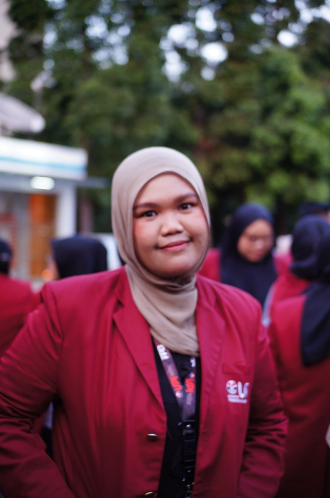

01 — Identifikasi Diri
Mengenal Diri Sebagai Calon Guru
Identitas Diri
Data Calon Guru

| Nama Lengkap | Riana Wahyu Puspitasari |
|---|---|
| NIM | 2531036 |
| Program Studi | PPG Prajabatan, Bidang Studi Informatika |
| Kelas | Informatika – B |
| LPTK | Universitas Pendidikan Indonesia |
| Sekolah PPL | SMA Negeri 1 Bandung |
| Mata Pelajaran | Informatika (Kelas XI) |
| Dosen Pembimbing | Dr. Eki Nugraha, S.Pd., M.Kom |
| Guru Pamong | Irman Margino, S.T. |
Tentang Saya
Selama PPL Terbimbing di SMA Negeri 1 Bandung, saya belajar bahwa guru bukan hanya penyampai materi, tetapi juga pendamping proses belajar peserta didik. Pengalaman itu membentuk cara saya memandang peran guru, sebagaimana saya uraikan pada visi di bawah ini.
Visi
Visi Pendidikan Indonesia
Visi
“Terwujudnya pendidikan bermutu untuk semua dengan dukungan partisipasi semesta dalam rangka mewujudkan bersama Indonesia Maju menuju Indonesia Emas 2045”
Misi
- Mewujudkan pendidikan yang berkeadilan, berkualitas, berdaya saing, dan relevan yang didukung dengan sarana dan prasarana memadai, sistem pembelajaran berkualitas, serta teknologi pembelajaran.
- Mewujudkan kedaulatan Bahasa Indonesia melalui pembangunan kebahasaan dan kesastraan.
- Mengoptimalkan kerja sama, kolaborasi, dan peran seluruh pemangku kepentingan untuk mendukung transformasi dan reformasi pengelolaan pendidikan.
Pandangan Saya
Pendidikan Indonesia perlu pemerataan bukan hanya pada akses dan fasilitas, tetapi juga pada kualitas pembelajaran yang diterima peserta didik — dan itu sangat bergantung pada guru di depan kelas. Saya membayangkan pendidikan yang membuat murid datang ke sekolah karena menyadari kebutuhan belajar, bukan sekadar kewajiban. Sebagai calon guru Informatika, saya ingin berkontribusi dengan menyampaikan materi sekaligus menunjukkan sikap dan kepribadian yang baik, sehingga apa yang dipelajari murid terasa bermakna bagi hidup mereka.
Visi Pribadi
Visi Pribadi sebagai Guru
Saya percaya bahwa pembelajaran yang dipersiapkan dengan baik akan membantu murid belajar dengan lebih nyaman dan memahami materi dengan lebih mudah. Saya ingin kehadiran saya di kelas benar-benar dirasakan peserta didik: bukan hanya menyampaikan materi, tetapi menciptakan pengalaman belajar yang membuat mereka terlibat dan menikmati prosesnya. Karena itu saya senang menyiapkan media, aktivitas, dan permainan sederhana, serta menyisipkan pantun atau obrolan ringan agar murid berani berinteraksi — tanpa melewati batas profesional sebagai guru.
Saya menyadari kekurangan saya: terkadang terlalu fokus mengejar target sehingga penyampaian materi lebih cepat dari seharusnya, dan masukan dosen, guru pamong, serta teman bahwa penggunaan bahasa saya perlu dirapikan. Hal ini menjadi pengingat untuk terus memperbaiki cara berkomunikasi. Saya ingin mengintegrasikan empat kompetensi guru dalam praktik sehari-hari:
Pedagogik Memahami dan merancang pembelajaran bagi setiap peserta didik
- Memahami bahwa setiap peserta didik memiliki kemampuan dan kecepatan pemahaman yang berbeda. Peserta didik yang belum paham tidak langsung dianggap tidak mampu — saya berusaha memahami kesulitannya agar lebih sabar mendampingi.
- Merancang pembelajaran sesuai kebutuhan peserta didik melalui media, aktivitas, dan permainan sederhana yang membantu mereka memahami materi dengan nyaman.
- Terus belajar menyesuaikan tempo dan cara penyampaian, karena saya terkadang terlalu fokus mengejar target sehingga materi tersampaikan lebih cepat dari seharusnya.
Kepribadian Sabar, tegas, ceria, dan menjadi teladan
- Menjadi guru yang sabar tetapi tegas, disiplin tanpa terlalu kaku — peserta didik mematuhi aturan karena memahami alasan dan tujuannya, bukan karena takut atau merasa dihakimi.
- Tetap ceria dan bersahabat, menyisipkan pantun atau obrolan ringan agar suasana santai, namun menjaga batas profesional.
- Menjaga sikap, tutur kata, dan perilaku, karena peserta didik belajar bukan hanya dari materi, tetapi juga dari cara guru bersikap.
Sosial Membangun hubungan yang nyaman dan terbuka
- Membangun hubungan baik sehingga peserta didik nyaman berinteraksi: berani menyapa, berbicara, bahkan menceritakan kesulitan atau pengalaman mereka tanpa rasa takut.
- Menjaga kedekatan tersebut tetap dalam batas profesional sebagai guru.
- Terbuka terhadap masukan dari dosen, guru pamong, rekan sejawat, dan pihak lain untuk memperbaiki cara mengajar dan berkomunikasi.
Profesional Terus belajar sebagai guru Informatika
- Terus mengembangkan kemampuan mengajar dan penguasaan materi; ilmu dan teknologi berkembang sehingga saya tidak boleh berhenti pada pengetahuan yang sudah dimiliki.
- Memperbarui pengetahuan tentang Informatika, media pembelajaran, dan teknologi agar yang saya sampaikan tetap relevan dengan perkembangan zaman.
- Mengembangkan media, aktivitas, permainan edukatif, dan praktik langsung agar peserta didik aktif, antusias, dan percaya diri menggunakan teknologi.
- Guru profesional adalah guru yang tidak merasa sudah cukup: mau belajar, menerima masukan, dan memperbaiki kualitas pembelajaran.
Jika Saya Berada di Posisi Siswa
- Kepribadian Saya ingin guru yang ceria, bersahabat, sabar, dan tegas tanpa harus galak.
- Pedagogik Saya lebih semangat belajar dengan guru yang menggunakan bahasa mudah dipahami, instruksi jelas, dan tugas terstruktur, serta media yang sesuai: presentasi untuk teori, modul atau video untuk panduan praktik, dan materi yang dilengkapi gambar atau visualisasi.
- Sosial Saya ingin guru yang memahami bahwa setiap siswa punya kemampuan dan cara memahami yang berbeda, sehingga ketika kesulitan saya tidak langsung dianggap tidak mampu.
- Profesional Saya pernah kurang nyaman ketika guru berceramah lama tanpa inti materi yang jelas, atau ketika pembelajaran praktik berjalan sementara guru belum benar-benar menguasai tugasnya sehingga siswa bingung.
- Pedagogik Saya ingin guru yang membuat saya merasa bahwa yang dipelajari bermanfaat dan dibutuhkan, dengan menghubungkan materi pada kehidupan dan kebutuhan peserta didik, bukan sekadar mengejar nilai.
Pengalaman tersebut membuat saya bertekad tidak menjadi guru yang mudah marah tanpa alasan, datang tanpa persiapan matang, atau menyampaikan materi tanpa tujuan yang jelas. Saya ingin peserta didik merasakan apa yang saya harapkan sebagai siswa: merasa dihargai, aman untuk bertanya, memahami yang dipelajari, dan tahu bahwa pembelajaran itu berarti bagi dirinya.
Bukti Dukung